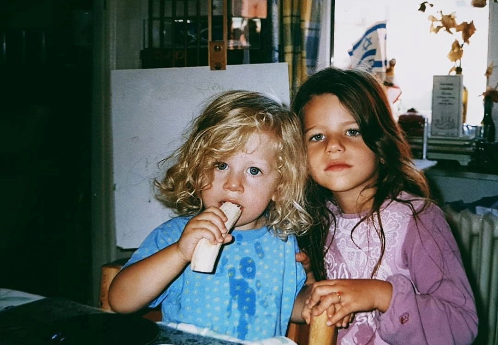

Science at the Speed of Computation
Harvard University, Cambridge, MA
Abstract
I am a second-year PhD student in Applied Mathematics at Harvard, advised by Boris Kozinsky in the Materials Intelligence Research (MIR) Group. I think the best use of AI is doing science faster. I work on it from first principles: atomistic simulation, and predicting what molecules and materials will do.
1 Introduction
Previously, I was at ETH Zürich, with stints at Caltech and Harvard.
The remainder of this page is organized as follows. Section 2 states some things about me. Section 3 presents a picture. Section 4 runs a simulation. Recent work is listed in the references [1, 2, 3, 4, 5].
I am always happy to chat. Please contact me at the correspondence address.
2 Preliminaries
Fact 1. The author grew up in Munich, Germany.
Fact 2. The author studied Physics, Chemistry and CS.
Fact 3. The author is responsible for FART (Flavor Analysis and Recognition Transformer), possibly the best acronym in science [New Scientist].
Conjecture 4. There is structure to be found in all kinds of complex systems, may they be from physics or the “real” world (financial markets, social networks, etc.), and the author has a deep fascination for finding it.
Theorem 5. I like solving problems.
Proof. Left as an exercise to the reader.
3 Early Results
Figure 1 shows me munching on a banana next to my sister.

4 Simulation
Figure 2 shows a small molecular dynamics simulation. Unlike most figures, it is computed while you read.
Acknowledgments
I am grateful to my advisor, Boris Kozinsky, and to the mentors who got me here: Eric Heller at Harvard, Jeremy Richardson and Kjell Jorner at ETH Zürich, and Sandeep Sharma at Caltech.
References
- [1]BranchIP: Learning Adaptive Equivariant Computation for Interatomic Potentials. Preprint.
- [2]Does Pretraining Teach Chemical Language Models Chemistry? NeurIPS 2026 AI for Science Workshop.
- [3]HUME: High-Throughput Molecular Embeddings from Fingerprints and Descriptors. NeurIPS 2026 ML4Molecules Workshop.
- [4]Beyond Adam: SOAP and Muon for Faster, Label-Efficient Training of Machine Learning Interatomic Potentials. ICML 2026 AI for Science Workshop (Oral).
- [5]A Unifying Lens on Reward Uncertainty in RLHF. Preprint.